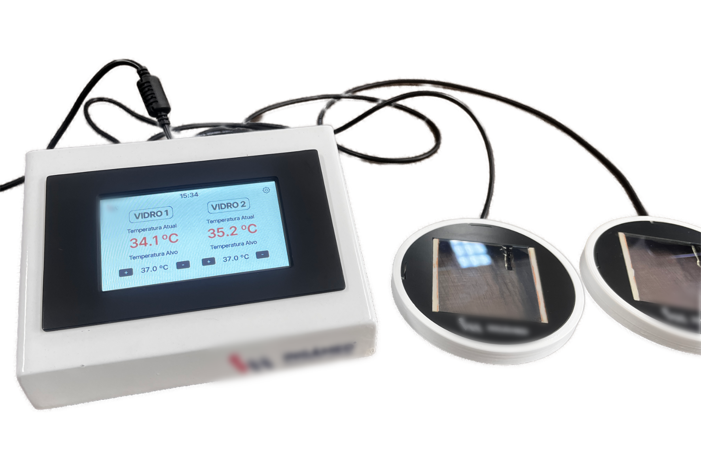
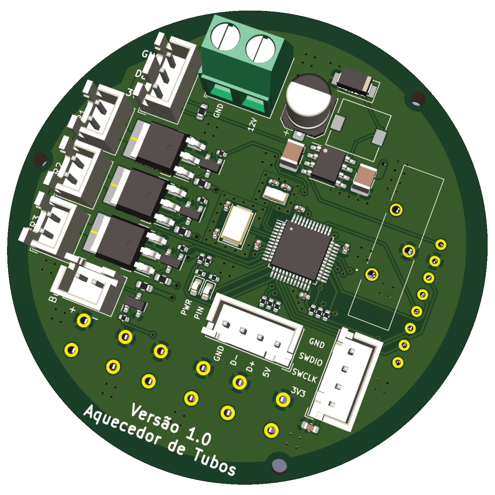
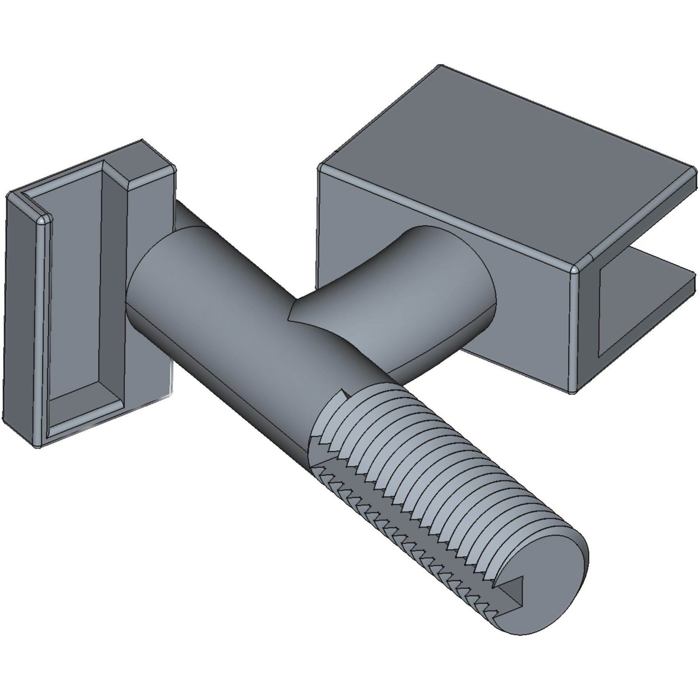

Especialista em firmware e hardware para dispositivos médicos. Maringá, Paraná.
Engenheiro Eletricista formado pela Universidade Estadual de Maringá, com 4 anos de experiência no desenvolvimento de sistemas embarcados para equipamentos médicos de reprodução humana assistida.
Atuo de forma integral no ciclo dos produtos — do circuito elétrico ao firmware — com foco em precisão e resultado. Tenho facilidade para trabalho em equipe, inglês avançado e domínio de ambientes Linux.
Desenvolvimento de sistemas embarcados para equipamentos médicos de reprodução humana assistida. Responsável por 3 produtos comerciais aprovados pela Anvisa: Aquecedor de Tubos, Bomba de Aspiração de Ovócitos e Vidro Aquecido para Microscopia Invertida.
Atuação integral: projeto de circuitos, design de PCBs, firmware para STM32 com FreeRTOS, validação e seleção de fornecedores. Protocolos: SPI, I2C, UART, USB, GPIO.
Reparo de placas eletrônicas de módulos diesel. Diagnóstico e substituição de componentes, soldagem em PCBs, montagem e reparo de chicotes elétricos e manutenção em caminhões.
Universidade Estadual de Maringá — UEM
Placa de controle com STM32, sensor de pressão em tempo real, log em cartão SD, RTC e comunicação USB + UART. Layout otimizado para montagem e manutenção.

Sistema embarcado de alta precisão para aquecimento em reprodução humana assistida. Placa circular com STM32, MOSFETs de potência, regulação de tensão e interface USB. Aprovado pela Anvisa.

Projeto mecânico paramétrico modelado no FreeCAD e fabricado via impressão 3D. Demonstra capacidade multidisciplinar em engenharia mecânica e prototipagem rápida.
